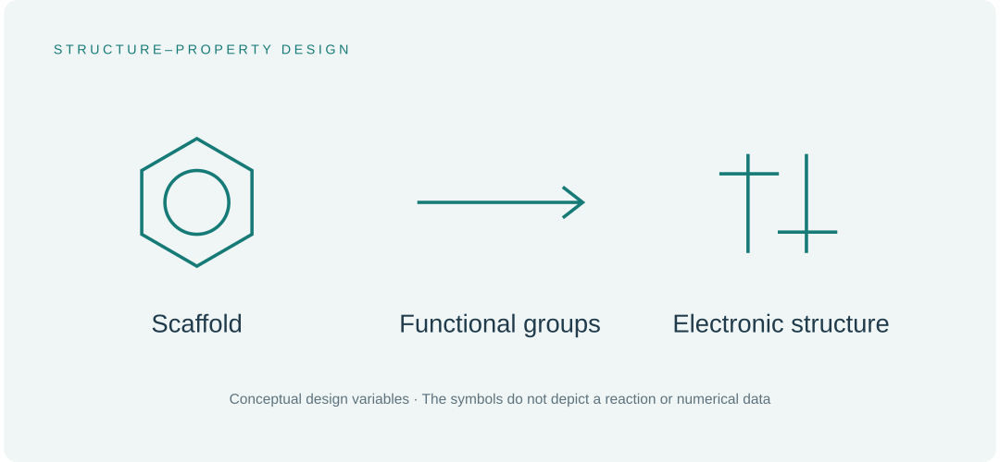

A collaboration combining amide-functionalized NHC-derived organoselenium synthesis with DFT analysis.
The research question
Can an ester-bearing NHC–selenium scaffold provide a straightforward route to amide-functionalized derivatives?

How we approached it
The study converted an activated ester-bearing NHC–Se precursor into amides using aliphatic amines without an added base or additive. PEG 3550 was used as the reaction medium. DFT calculations complemented the synthesis by examining molecular electronic structure.
What we found
The synthetic approach accommodated different amines, expanding the accessible organoselenium series. The calculations helped interpret electronic properties and reactivity. Biomedical relevance was a motivation for the chemistry, rather than a demonstrated therapeutic outcome.
Why it matters
The work illustrates how synthesis and computational analysis can support one another in a heteroatom-rich molecular system.
My contribution
I carried out the DFT studies and edited the corresponding section of the manuscript, as recorded in the published author-contribution statement.
My contribution connected a synthetic collaboration with molecular electronic-structure analysis.
Scope of the work
The paper discusses potential biomedical applications; this research story does not imply clinical or therapeutic validation.
Read the publication
Research summary based on the published article and its documented scope. Original illustrations are provided for explanation.